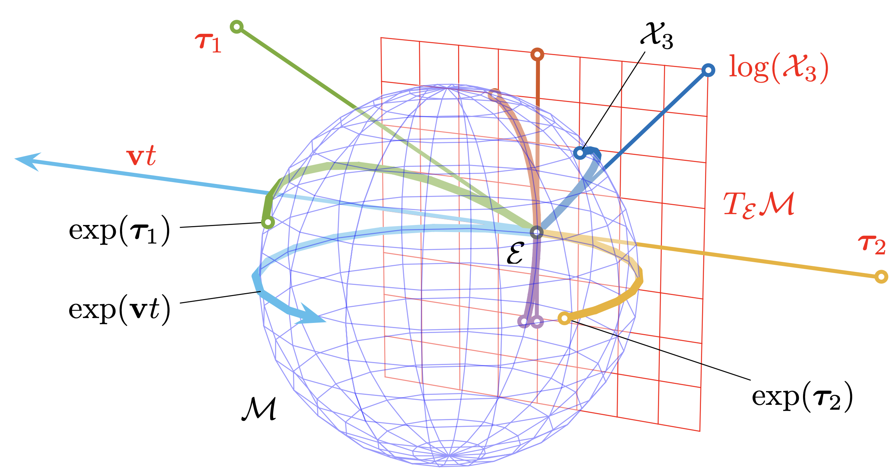
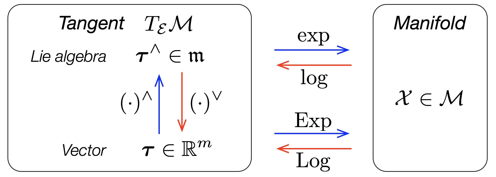

In robotics, we often occur groups such as \(\text{SO}(2)\), quaternions, \(\text{SO}(3)\), and \(\text{SE}(3)\). These groups are also manifolds – which are Lie groups. If we want to optimize (for example, gradient methods) along these groups, we do not how to compute the derivatives. However, one can use Riemannina gradient (manifold optimization) or in this note, we use Lie theory to define derivatives on Lie algebra, allowing us to manipulate calculus.

Figure 1 Lie group (blue) and the Lie algebra (red) [1].
Before we start, we first show an excellent graph by Sola [1], the groups we are dealing with is sort of like the blue sphere, and its corresponding Lie algebra is the tangent plane of identity \(\mathcal{E}\), which is a vector space under some operator.
Useful notions when working with Lie groups: Lie theory cheat sheet.
A micro Lie theory
We give a micro introduction to Lie theory since it is by no means simple.
Lie group
A Lie group \(\mathcal{G}\) is a smooth manifold whose elements satisfy the group axioms.
-
smooth manifold: a topological space that locally resembles linear spaces
The smoothness of manifold implies the existence of a unique tangent space at each point, and such space is linear which are allowed to do calculus.
-
group: a set \(\mathcal{G}\) with binary operator \(\circ\) that satisfy group axioms, for \(\mathcal{X,Y,Z\in G}\)
- (closure) \(\mathcal{X\circ Y\in G}\)
- (associative) \(\mathcal{(X\circ Y)\circ Z=X\circ(Y\circ Z)}\)
- (identity) there exists unique \(\mathcal{E\in G}\) such that \(\mathcal{E\circ X=X\circ E=X}\)
- (inverse) there exists unique \(\mathcal{X^{-1}\in G}\) such that \(\mathcal{X^{-1}\circ X=X\circ X^{-1}=E}\)
By (closure), we have that group composition also lies on the manifold.
Group actions
Given a Lie group \(\mathcal{M}\) and a set \(V\), we define \(\mathcal{X}\cdot v\) the action of \(\mathcal{X\in M}\) on \(v\in V\),
$$ \cdot:\mathcal{M}\times V\to V\ ;\ \ \mathcal{(X,v)\mapsto X}\cdot v. $$
For \(\cdot\) to be a group action, it must satisfy the axioms:
- (identity) \(\mathcal{E}\cdot v=v\)
- (compatibility) \(\mathcal{(X\circ Y)}\cdot v=\mathcal{X\cdot(Y\cdot v)}\)
Common examples are the groups of rotation matrix \(\mathbf{R}\in\text{SO}(n)\), the group of unit quaternion \(\mathbf{q}\in S^3\), the group of rigid motion \(\mathbf{T}\in\text{SE}(n)\). Their respective actions on vectors satisfy:
- rotation matrix: \(\mathbf{R\cdot x=Rx}\)
- unit quaternion: \(\mathbf{q\cdot x=qxq}^*\)
- transformation: \(\mathbf{T\cdot x=Rx+t}\)
The group composition is an action itself \(\circ:\mathcal{M\times M\to M}\).
Lie algebra
Given \(\mathcal{X}\) a point on a Lie group \(\mathcal{M}\), the tangent space is denoted by \(T_\mathcal{X}\mathcal{M}\). The tangent space at the identity \(T_\mathcal{E}\mathcal{M}\) is called the Lie algebra of \(\mathcal{M}\), denoted by \(\frak{m}\). Every Lie group has an associated Lie algebra with the following facts:
- \(\frak{m}\) is a vector space in \(\mathbb{R}^m\), where \(m\) is the DoF of \(\mathcal{M}\)
- exponential map \(\exp:\frak{m}\to\mathcal{M}\) exactly converts Lie algebra to Lie group
- log map \(\log:\mathcal{M}\to\frak{m}\) exactly converts Lie group to Lie algebra
- vectors of \(T_\mathcal{X}\mathcal{M}\) can be transformed to \(T_\mathcal{E}\mathcal{M}\) through a linear transform (adjoint)
We denote \(\boldsymbol{\tau}^\wedge\) for general elements of tangent spaces where \(\boldsymbol{\tau}\in\mathbb{R}^m\). We further pass \(\frak{m}\) to \(\mathbb{R}^m\) by a isomorphic map, called hat \(^\wedge\) and vee \(^\vee\):
$$ \begin{aligned} (\cdot)^\wedge:\mathbb{R}^m\to\frak{m}\ ;&\ \ \boldsymbol{\tau}\mapsto\boldsymbol{\tau}^\wedge=\sum_{i=1}^m\tau_i\mathbf{E}_i\\ (\cdot)^\vee:\frak{m}\to\mathbb{R}^m\ ;&\ \ \boldsymbol{\tau}^\wedge\mapsto\boldsymbol{\tau}=\sum_{i=1}^m\tau_i\mathbf{e}_i \end{aligned} $$
where \(\mathbf{e}_i\) are the basis of \(\mathbb{R}^m\) and \(\mathbf{E}_i=\mathbf{e}_i^\wedge\) are the derivatives of \(\mathcal{X}\) around the origin in the \(i\)-th direction. This means \(\frak{m}\cong\mathbb{R}^m\) or \(\boldsymbol{\tau}^\wedge\cong\boldsymbol{\tau}\), and \(\boldsymbol{\tau}\in\mathbb{R}^m\) is more convenient in terms of manipulating linear algebra. We say \(\boldsymbol{\tau}\) is the Cartesian vector in Cartesian space to differentiate it with the Lie algebra \(\boldsymbol{\tau}^\wedge\).
I do not fully understand how to derive the Lie algebra, therefore I will directly use the definition of Lie algebra in this note. Please see Equation (9) in [1].
For example, the Lie algebra \(\frak{so}(3)\) of the rotation group \(\text{SO}(3)\) is skew-symmetric defined as follows: $$ [\boldsymbol{w}]_\times=\begin{bmatrix} 0&-w_z&w_y\\ w_z&0&-w_x\\ -w_y&w_x&0 \end{bmatrix}\in\frak{so}(3). $$
The Lie algebra \(\frak{so}(3)\) is a vector space where we can write is as a linear combination of basis: $$ [\boldsymbol{w}]_\times=w_x \underbrace{\begin{bmatrix} 0&0&0\\ 0&0&-1\\ 0&1&0 \end{bmatrix}}_{\mathbf{E}_x}+w_y \underbrace{\begin{bmatrix} 0&0&1\\ 0&0&0\\ -1&0&0 \end{bmatrix}}_{\mathbf{E}_y}+w_z \underbrace{\begin{bmatrix} 0&-1&0\\ 1&0&0\\ 0&0&0 \end{bmatrix}}_{\mathbf{E}_z}, $$
and therefore we can transfer between \(\frak{so}(3)\) and \(\mathbb{R}^3\) with the hat and vee maps: $$ \begin{aligned} (\cdot)^\wedge:\mathbb{R}^3\to\frak{so}(3)\ ;&\ \ \boldsymbol{w}\mapsto\boldsymbol{w}^\wedge=[\boldsymbol{w}]_\times\\[8pt] (\cdot)^\vee:\frak{so}(3)\to\mathbb{R}^3\ ;&\ \ [\boldsymbol{w}]_\times\mapsto[\boldsymbol{w}]_\times^\vee=\boldsymbol{w} \end{aligned} $$
Exponential map

Figure 2 Mappings between Lie group and Lie algebra [1].
The exponential map exactly transfer elements on Lie algebra to the Lie group, and the logarithmic map is the inverse. Intuitively, \(\exp(\cdot)\) wraps the tangent element around the manifold following the great arc or geodesic of the sphere (Figure 1).
$$ \begin{aligned} \exp(\cdot):\frak{m}\to\mathcal{M}\ ;&\ \ \boldsymbol{\tau}^\wedge\mapsto\mathcal{X}\\[8pt] \log(\cdot):\mathcal{M}\to\frak{m}\ ;&\ \ \mathcal{X}\mapsto\boldsymbol{\tau}^\wedge \end{aligned} $$
Captialized \(\text{Exp}(\cdot)\) and \(\text{Log}(\cdot)\) levarages the isomorphic map and directly connects Lie group to Cartesian space: $$ \begin{aligned} \text{Exp}(\cdot):\mathbb{R}^m\to\mathcal{M}\ ;&\ \ \boldsymbol{\tau}\mapsto\text{exp}(\boldsymbol{\tau}^\wedge)=\mathcal{X}\\[8pt] \text{Log}(\cdot):\mathcal{M}\to\mathbb{R}^m\ ;&\ \ \mathcal{X}\mapsto\text{log}(\mathcal{X})^\vee=\boldsymbol{\tau} \end{aligned} $$
We take \(\text{SO}(3)\) as an example again, denote the rotation vector \(\boldsymbol{\theta}=\theta\mathbf{u}:=\boldsymbol{w}\in\mathbb{R}^3\) as the axis-angle representation of the rotation, where \(\mathbf{u}\) is the unit axis and \(\theta\) is the angle. That is, \(\boldsymbol{\theta}\) is the Cartesian vector of a rotation matrix \(\mathbf{R}\), and \(\mathbf{R}=\text{Exp}(\boldsymbol{\theta})=\exp([\boldsymbol{\theta}]_\times)\). We summarize the relation as follows: $$ \mathbf{R}\in\text{SO(3)}\iff[\boldsymbol{\theta}]_\times\in\frak{so}(3)\iff\boldsymbol{\theta}\in\mathbb{R}^3. $$
To find the exponential map, consider the exponential power series: $$ \begin{aligned} \exp([\theta\mathbf{u}]_\times)&=\sum_{k=1}^\infty\frac{\theta^k}{k!}[\mathbf{u}]_\times^k\\ &=[\mathbf{u}]_\times^0 + \theta[\mathbf{u}]_\times + \frac{\theta^2}{2!}[\mathbf{u}]_\times^2 + \frac{\theta^3}{3!}[\mathbf{u}]_\times^3 + \frac{\theta^4}{4!}[\mathbf{u}]_\times^4 + \frac{\theta^5}{5!}[\mathbf{u}]_\times^5 + \frac{\theta^6}{6!}[\mathbf{u}]_\times^6 + \dots\\ &=\mathbf{I}_3 + \theta[\mathbf{u}]_\times + \frac{\theta^2}{2!}[\mathbf{u}]_\times^2 - \frac{\theta^3}{3!}[\mathbf{u}]_\times - \frac{\theta^4}{4!}[\mathbf{u}]_\times^2 + \frac{\theta^5}{5!}[\mathbf{u}]_\times + \frac{\theta^6}{6!}[\mathbf{u}]_\times^2 + \dots\\ &=\mathbf{I}_3 + [\mathbf{u}]_\times(\theta-\frac{\theta^3}{3!}+\frac{\theta^5}{5!}-\dots) + [\mathbf{u}]_\times^2(\frac{\theta^2}{2!}-\frac{\theta^4}{4!}+\frac{\theta^6}{6!}-\dots)\\[8pt] &=\mathbf{I}_3 + [\mathbf{u}]_\times\sin\theta + [\mathbf{u}]_\times^2(1-\cos\theta). \end{aligned} $$
To find the logarithmic map, we first find the angle \(\theta\) then compute the axis \(\mathbf{u}\): $$ \theta=\arccos\Big(\frac{\text{tr}(\mathbf{R})-1}{2}\Big)\ ;\ \ \mathbf{u}=\frac{(\mathbf{R}-\mathbf{R}^\top)^\wedge}{2\sin\theta}\ ;\ \ \boldsymbol{\theta}=\frac{\theta(\mathbf{R}-\mathbf{R}^\top)^\wedge}{2\sin\theta}. $$
Recall that \(\mathbf{R}\sim\begin{pmatrix}\cos\theta&-\sin\theta&0\\\sin\theta&\cos\theta&0\\0&0&1\end{pmatrix}\) and similar matrices have the same trace.
We conclude the captialized exponential map and logarithmic map:
$$ \begin{aligned} \text{Exp}(\cdot):\mathbb{R}^3\to\text{SO}(3)\ ;&\ \ \boldsymbol{\theta}=(\theta\mathbf{u})\mapsto\mathbf{I}_3 + [\mathbf{u}]_\times\sin\theta + [\mathbf{u}]_\times^2(1-\cos\theta)=\mathbf{R}\\[8pt] \text{Log}(\cdot):\text{SO}(3)\to\mathbb{R}^3\ ;&\ \ \mathbf{R}\mapsto\frac{\theta(\mathbf{R}-\mathbf{R}^\top)^\wedge}{2\sin\theta}=\boldsymbol{\theta}\ ;\ \ \theta=\arccos\Big(\frac{\text{tr}(\mathbf{R})-1}{2}\Big) \end{aligned} $$
Plus and minus operators
Plus and minus allow us to introduce increments between elements of a (curved) manifold, and express them in its (flat) Cartesian tangent space by the captialized maps.
Reference
[1] Sola, J., Deray, J., & Atchuthan, D. (2018). A micro Lie theory for state estimation in robotics. arXiv preprint arXiv:1812.01537.
[2] Blanco-Claraco, J. L. (2021). A tutorial on SE(3) transformation parameterizations and on-manifold optimization. arXiv preprint arXiv:2103.15980.
[3] Eade, E. (2013). Lie groups for 2d and 3d transformations.
[4] open source: manif